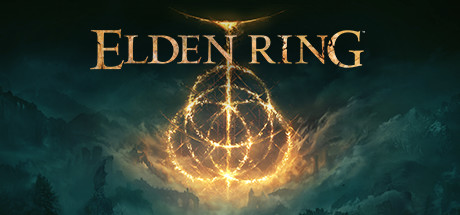
Guide
Elden Ring: come creare un personaggio equilibrato
Una guida ragionata a statistiche, progressione e preparazione per affrontare l’Interregno con meno frustrazione.
Leggi l’approfondimento →
Una guida ragionata a statistiche, progressione e preparazione per affrontare l’Interregno con meno frustrazione.
Leggi l’approfondimento →
Una lettura chiara delle tecnologie della console e dei compromessi tra qualità grafica e fluidità.
Leggi l’approfondimento →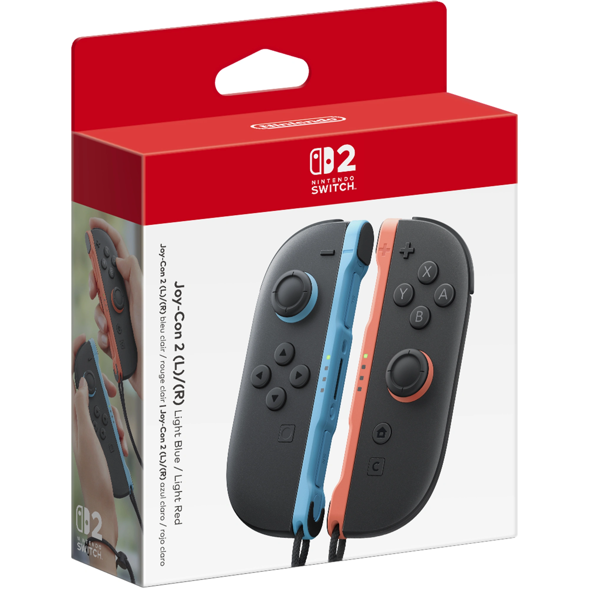
Cosa osservare nella nuova console ibrida: schermo, controlli, giochi compatibili e uso in casa o in mobilità.
Leggi l’approfondimento →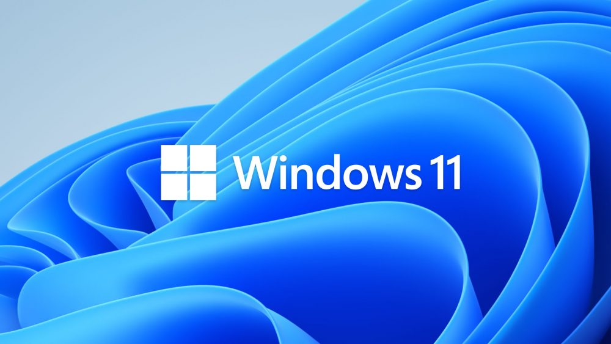
Una checklist pratica per mantenere il PC ordinato, aggiornato e stabile durante le sessioni di gioco.
Leggi l’approfondimento →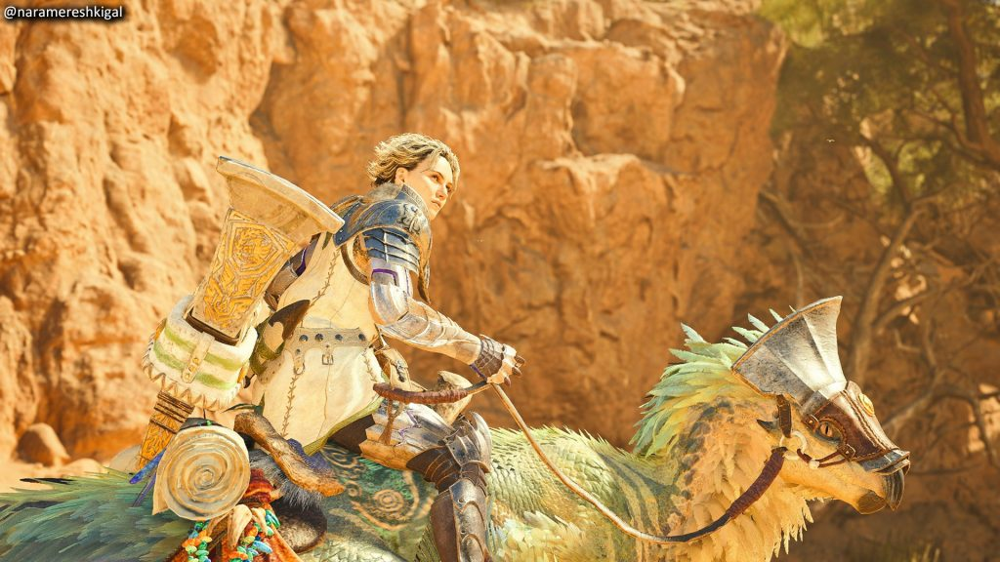
Un’analisi del ritmo di gioco, della struttura delle aree e di ciò che rende riconoscibile la serie.
Leggi l’approfondimento →Un approfondimento sulle opzioni di accessibilità, leggibilità e comunicazione, senza inseguire configurazioni miracolose.
Leggi l’approfondimento →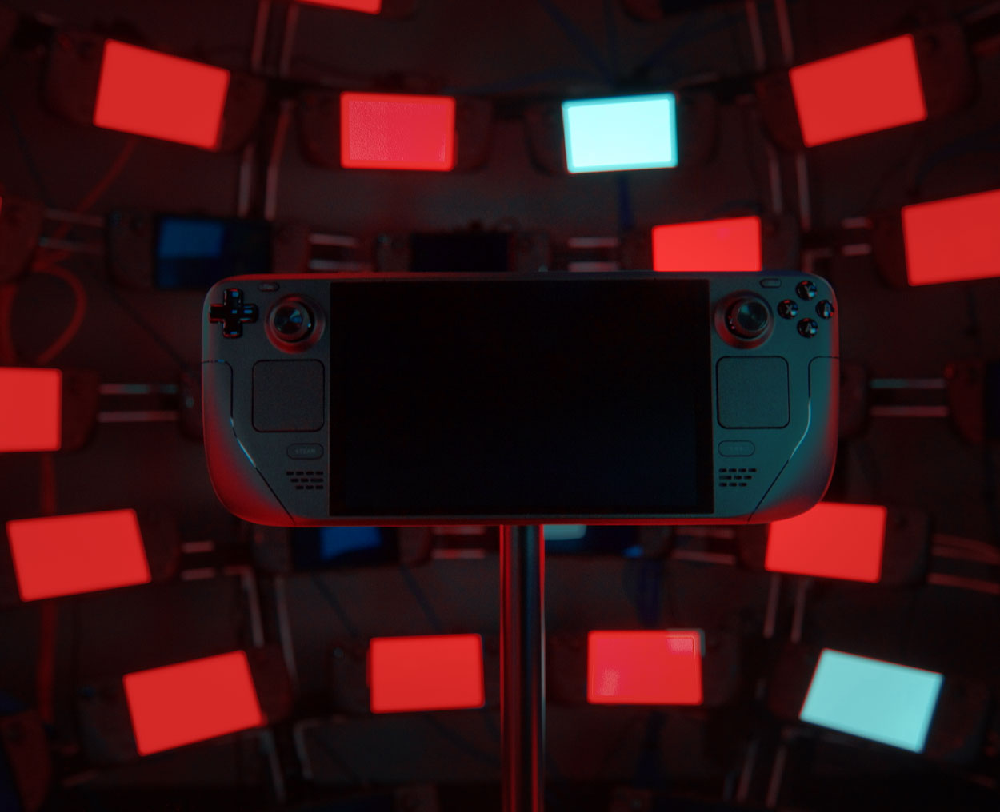
Due approcci diversi al PC portatile: sistema operativo, schermo, autonomia, ergonomia e libreria dei giochi.
Leggi l’approfondimento →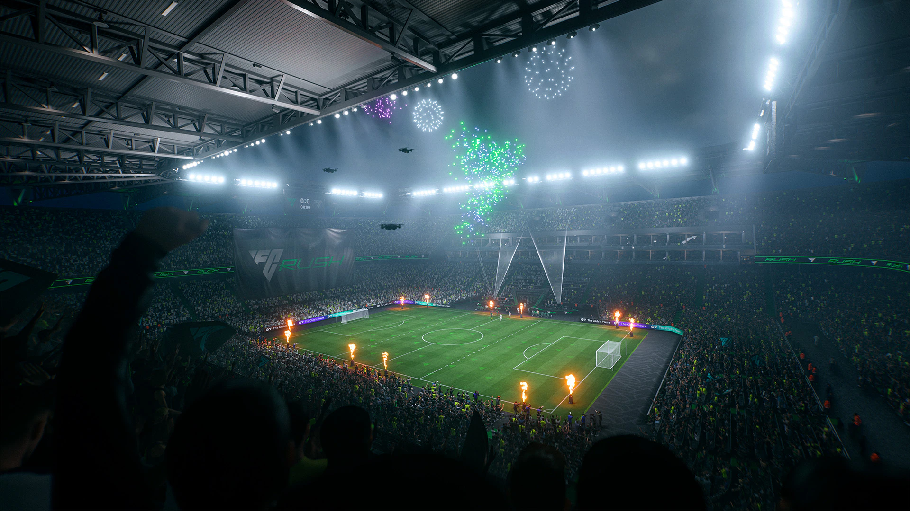
Una guida alla gestione del tempo, delle risorse di gioco e delle impostazioni di acquisto, con attenzione al budget.
Leggi l’approfondimento →
Una guida per organizzare l’esplorazione, raccogliere risorse e trasformare le scoperte in progetti creativi.
Leggi l’approfondimento →Un’analisi non spoiler della direzione artistica, del ritmo e del modo in cui il remake aggiorna un classico.
Leggi l’approfondimento →
Catalogo, disponibilità, streaming e costi ricorrenti: le domande da farsi prima di scegliere un servizio.
Leggi l’approfondimento →
Come scegliere le impostazioni grafiche in modo consapevole e valutare le modifiche create dalla community.
Leggi l’approfondimento →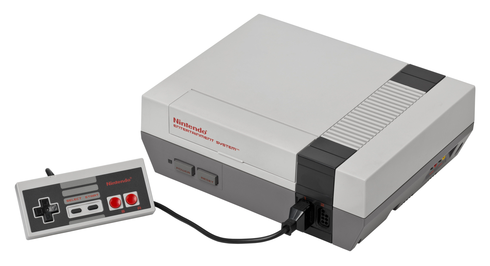
Una checklist per valutare genere, durata, compatibilità, accessibilità e costo senza farsi guidare soltanto dall’hype.
Leggi l’approfondimento →Personalizzare l’esperienza, imparare le modalità e gestire tempo e acquisti in modo consapevole.
Leggi l’approfondimento →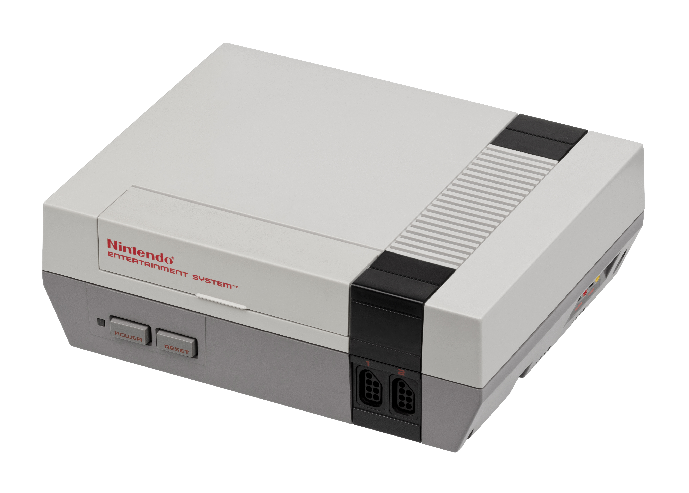
Un viaggio nella storia delle piattaforme domestiche, tra cartucce, dischi, rete e servizi digitali.
Leggi l’approfondimento →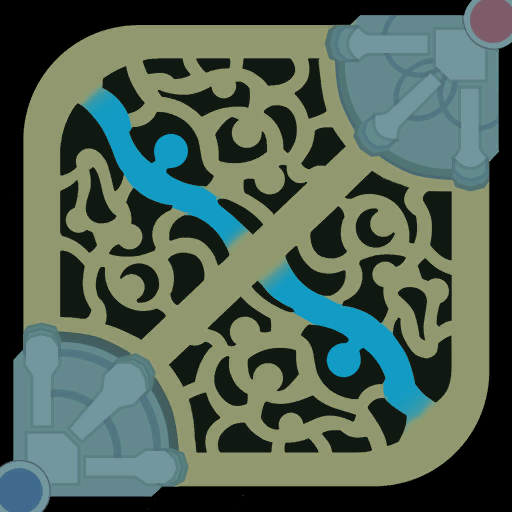
Una panoramica per capire struttura della partita, collaborazione e apprendimento senza sovraccaricarsi di informazioni.
Leggi l’approfondimento →
Una guida non spoiler ai diversi stili dell’horror e alle classificazioni da controllare prima di giocare.
Leggi l’approfondimento →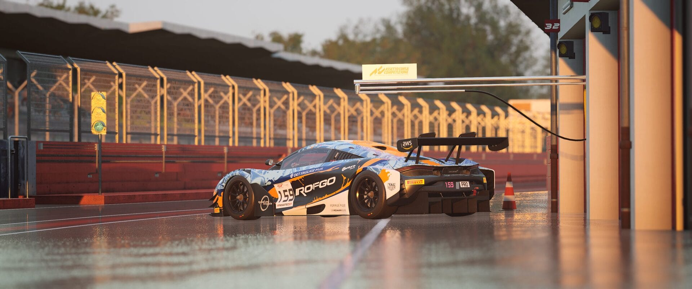
Come affrontare le opzioni del simulatore, leggere i feedback e costruire un’esperienza di guida virtuale coerente.
Leggi l’approfondimento →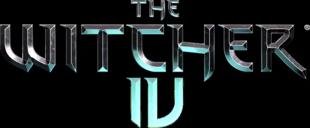
Un metodo per seguire lo sviluppo del prossimo capitolo senza confondere materiale ufficiale e rumor.
Leggi l’approfondimento →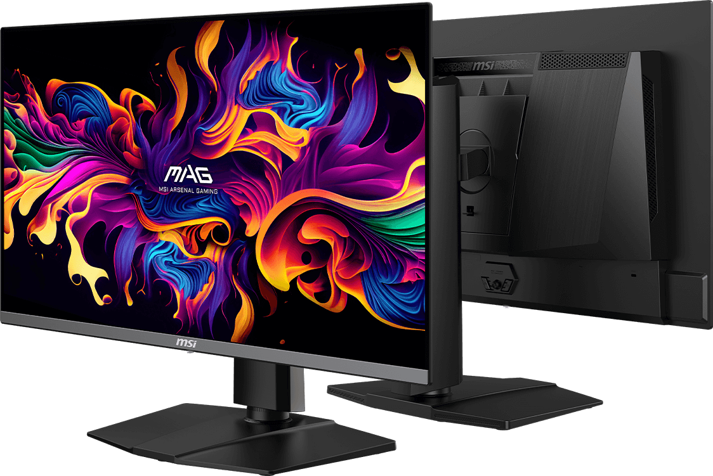
Una guida all’acquisto che considera contrasto, luminosità, refresh rate, uso quotidiano e budget.
Leggi l’approfondimento →
Dieci giochi mobile da provare nel 2026: strategia, avventura, carte, azione e multiplayer, tra esperienze gratuite e premium.
Leggi l’approfondimento →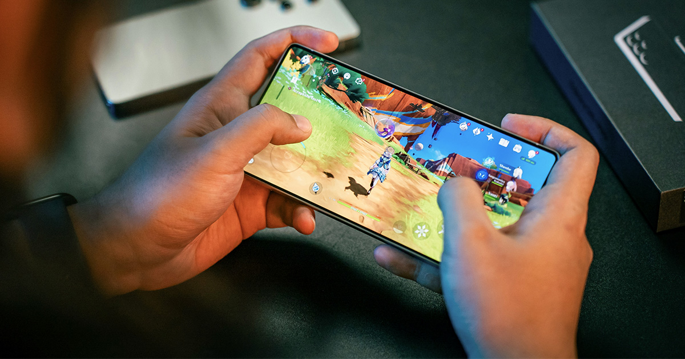
Una panoramica di giochi e conversioni mobile da scoprire nel 2026, tra avventure indie, strategia e grandi nomi.
Leggi l’approfondimento →
Il Playstation Blog ha annunciato il pre-download di Grand Theft Auto VI: ecco cosa significa e come preparare la console.
Leggi l’approfondimento →
La base installata di PlayStation 5 si avvicina a un traguardo simbolico: analizziamo cosa significa per giocatori e industria.
Leggi l’approfondimento →
Nuovi giochi, livelli di abbonamento e valore del Game Pass: una guida per capire se il servizio conviene davvero.
Leggi l’approfondimento →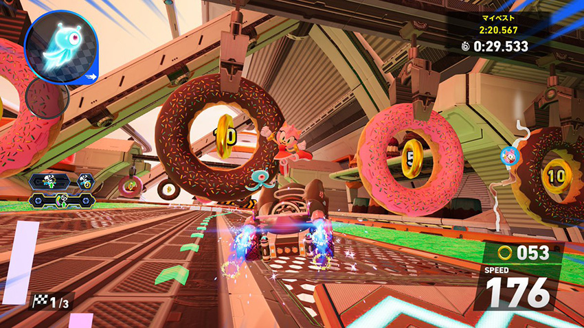
SEGA ha annunciato l’avvio dell’Anno 2 con la modalità Duello, nuovi personaggi e gadget: ecco cosa cambia.
Leggi l’approfondimento →
IO Interactive ha annunciato uno Starter Pack che permette ai giocatori PS5 di provare gratuitamente la missione introduttiva.
Leggi l’approfondimento →
Una selezione trasversale dei giochi che stanno caratterizzando il 2026 tra avventura, horror, corse, azione e strategia.
Leggi l’approfondimento →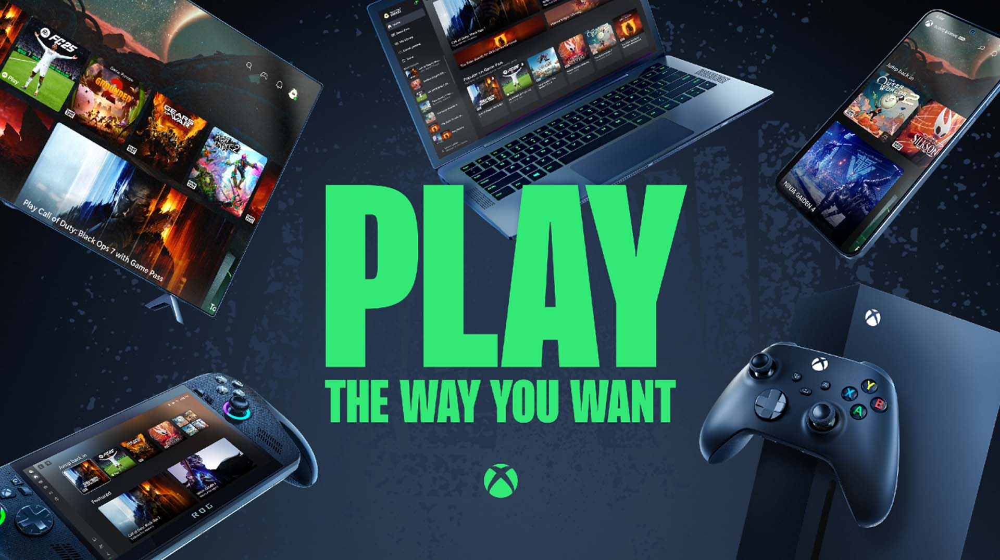
Microsoft sta sperimentando nuove modalità di controllo per il cloud gaming: vantaggi, limiti e cosa cambia per i giocatori.
Leggi l’approfondimento →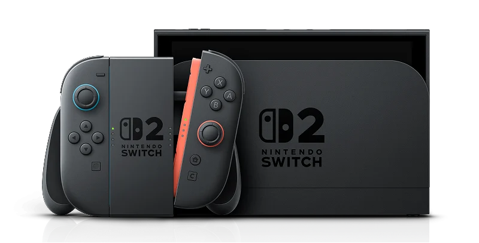
Una guida pratica per orientarsi tra giochi compatibili, modalità portatile, multiplayer e spazio di archiviazione.
Leggi l’approfondimento →
Cloud gaming, portatili, intelligenza artificiale, retrocompatibilità e servizi: le direzioni dell’industria videoludica.
Leggi l’approfondimento →Processore, schermo, batteria, raffreddamento e memoria: guida pratica per scegliere un telefono adatto ai videogiochi.
Leggi l’approfondimento →La semifinale si chiude 3-1: ecco cosa racconta il risultato e cosa aspettarsi dall’ultimo atto del mondiale di League of Legends.
Leggi l’approfondimento →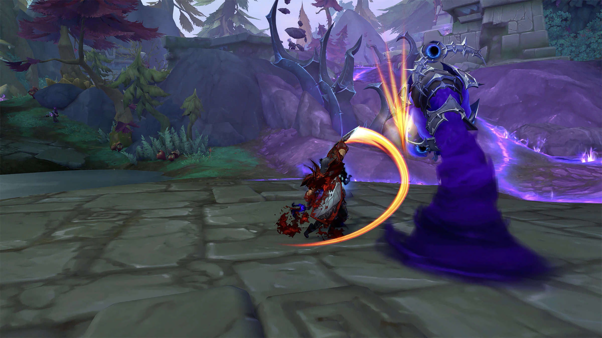
Il hotfix dell’8 novembre interviene sull’esperienza ottenuta dai nemici nei dungeon dopo le critiche dei giocatori: cosa cambia nel livellamento.
Leggi l’approfondimento →
Il report del 9 novembre segnala licenziamenti nello studio dopo il rientro di alcuni dipendenti precedentemente in furlough: il contesto e le ricadute.
Leggi l’approfondimento →
Secondo i dati riportati l’8 novembre, il remake ha ottenuto il secondo miglior debutto fisico della serie Zelda nel mercato britannico.
Leggi l’approfondimento →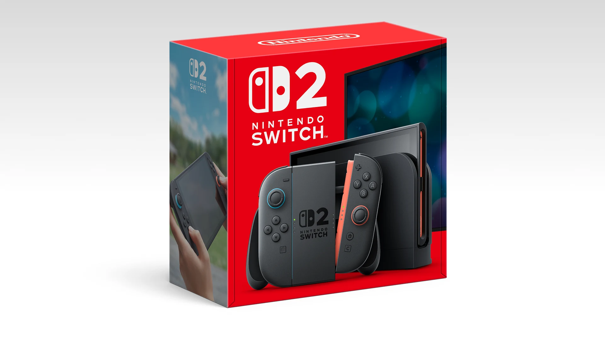
I dati trimestrali riportati il 9 novembre mostrano un rallentamento anno su anno: perché il confronto con il lancio va interpretato nel contesto.
Leggi l’approfondimento →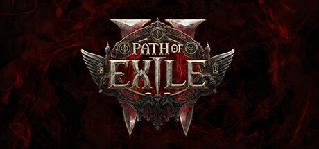
Grinding Gear Games prepara il passaggio fuori dall’early access con nuove classi, atti e una nuova lega: ecco come leggere l’annuncio.
Leggi l’approfondimento →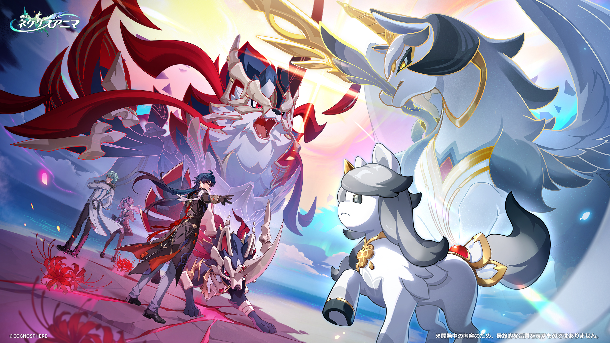
HoYoverse ha indicato una finestra di lancio per la primavera 2027 e ha aperto le registrazioni per l’ultima closed beta.
Leggi l’approfondimento →L’aggiornamento per gli Insider promette un avvio dell’app fino al 60% più rapido e un’esperienza rivista tra PC, web e cloud.
Leggi l’approfondimento →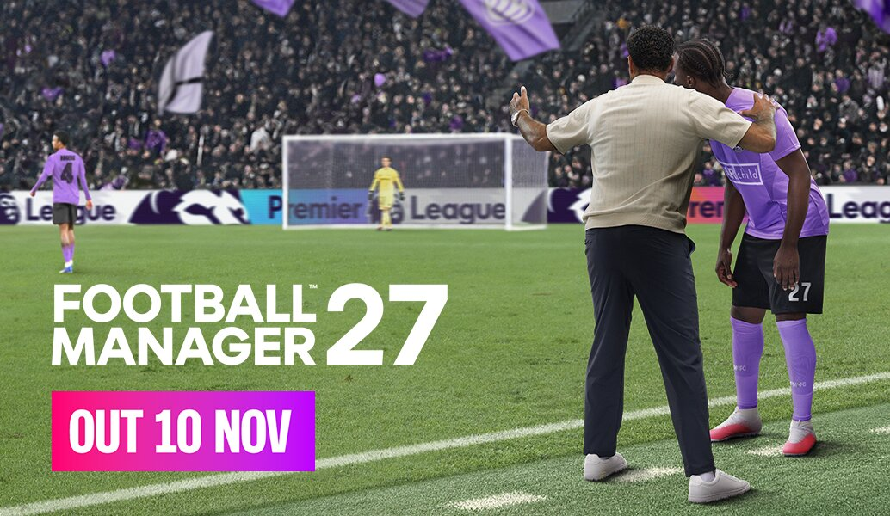
Una guida alle uscite annunciate tra il 9 e il 16 novembre 2026, con piattaforme e date da controllare prima dell’acquisto.
Leggi l’approfondimento →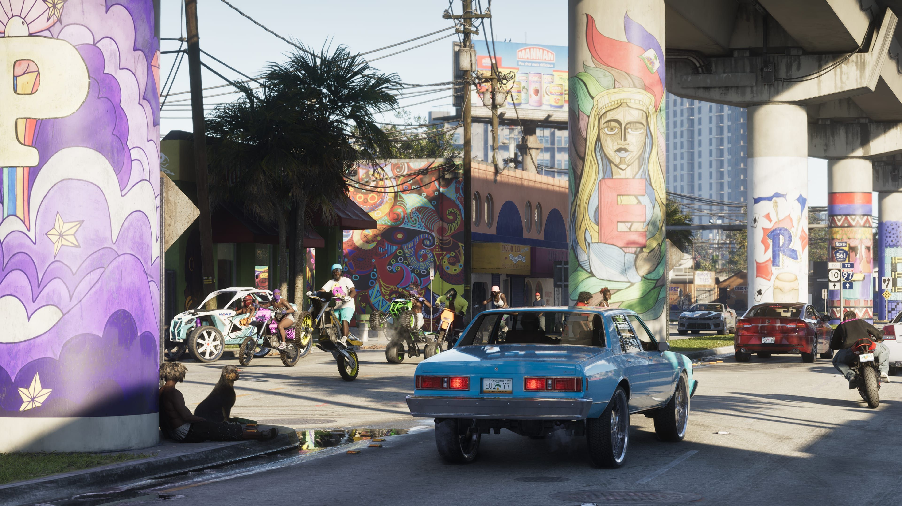
Il 21 novembre è previsto un evento a Mana Wynwood con artisti legati alla colonna sonora e una lotteria per i biglietti: i dettagli riportati.
Leggi l’approfondimento →Nessun articolo corrisponde alla ricerca. Prova un altro termine.